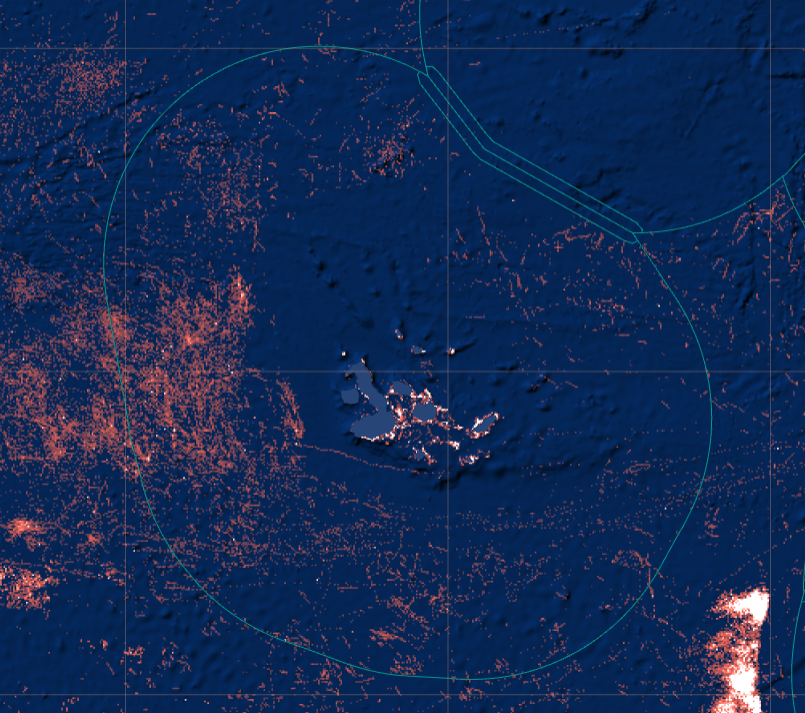
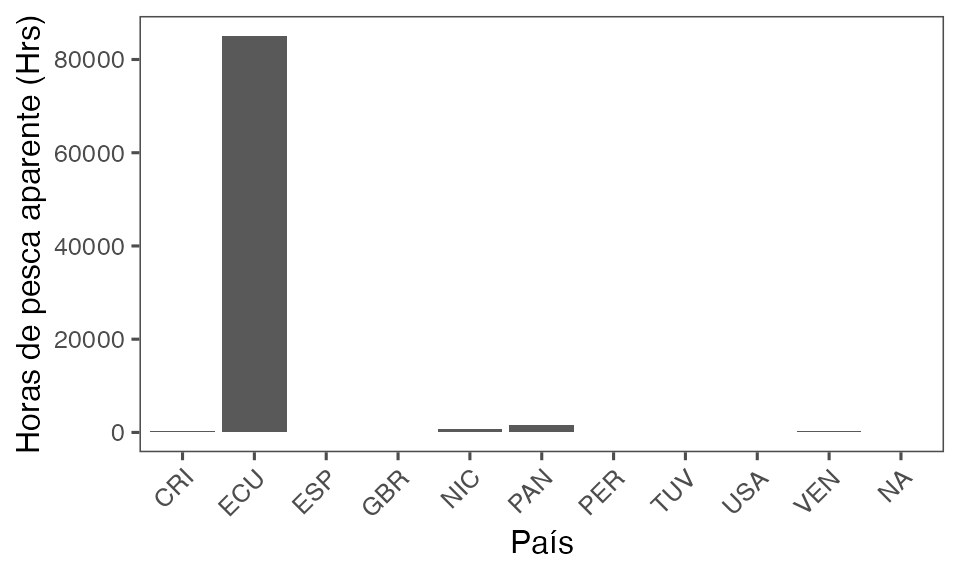
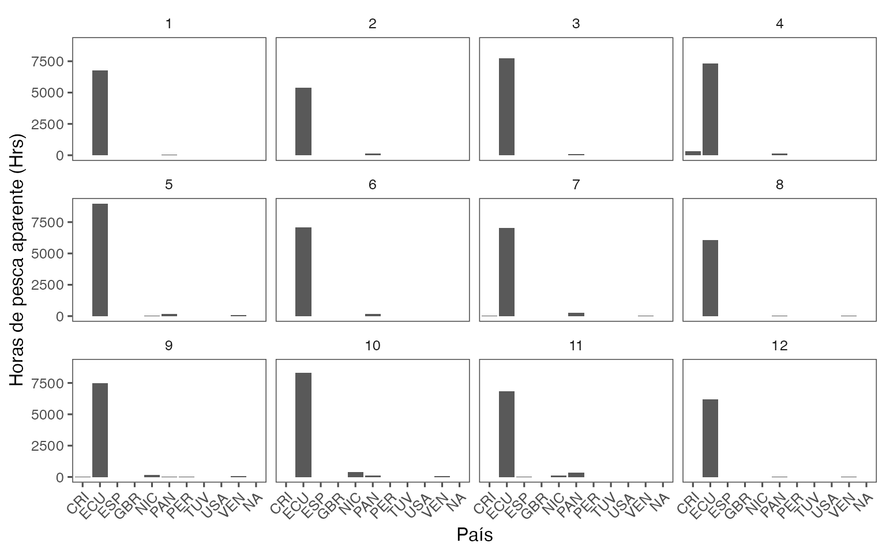
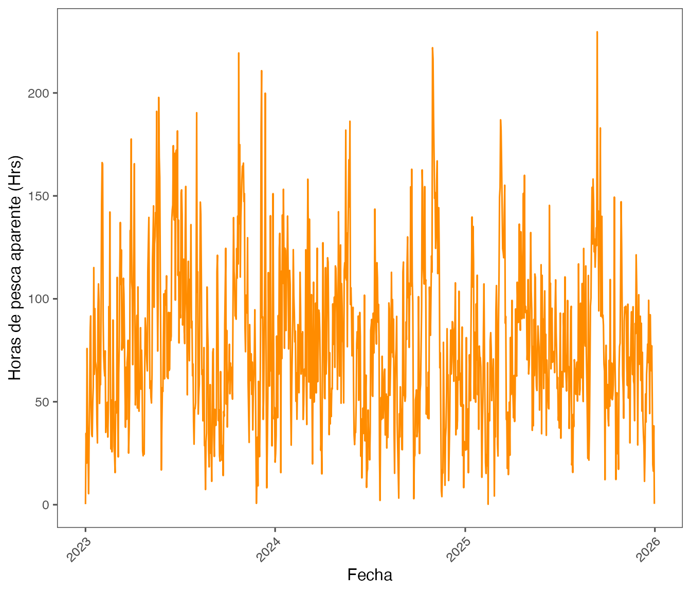
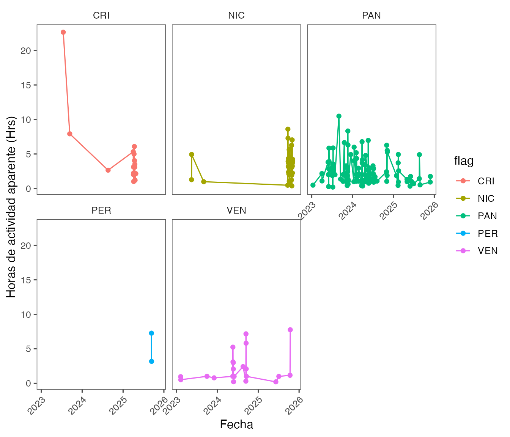
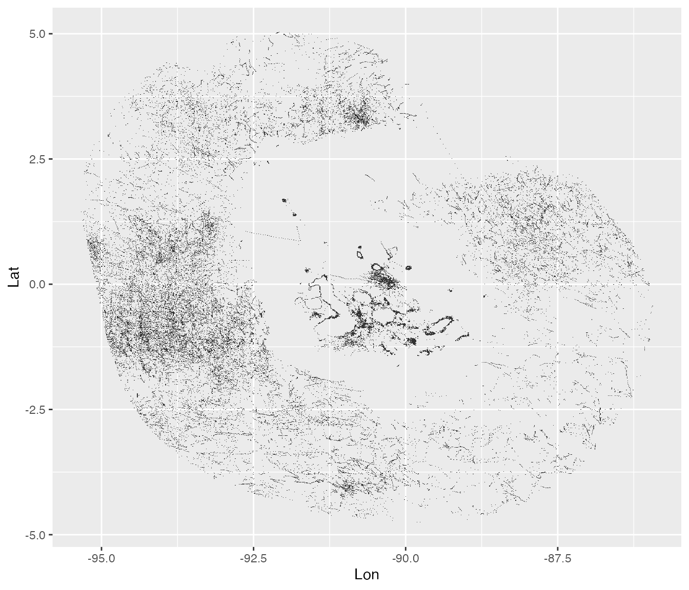
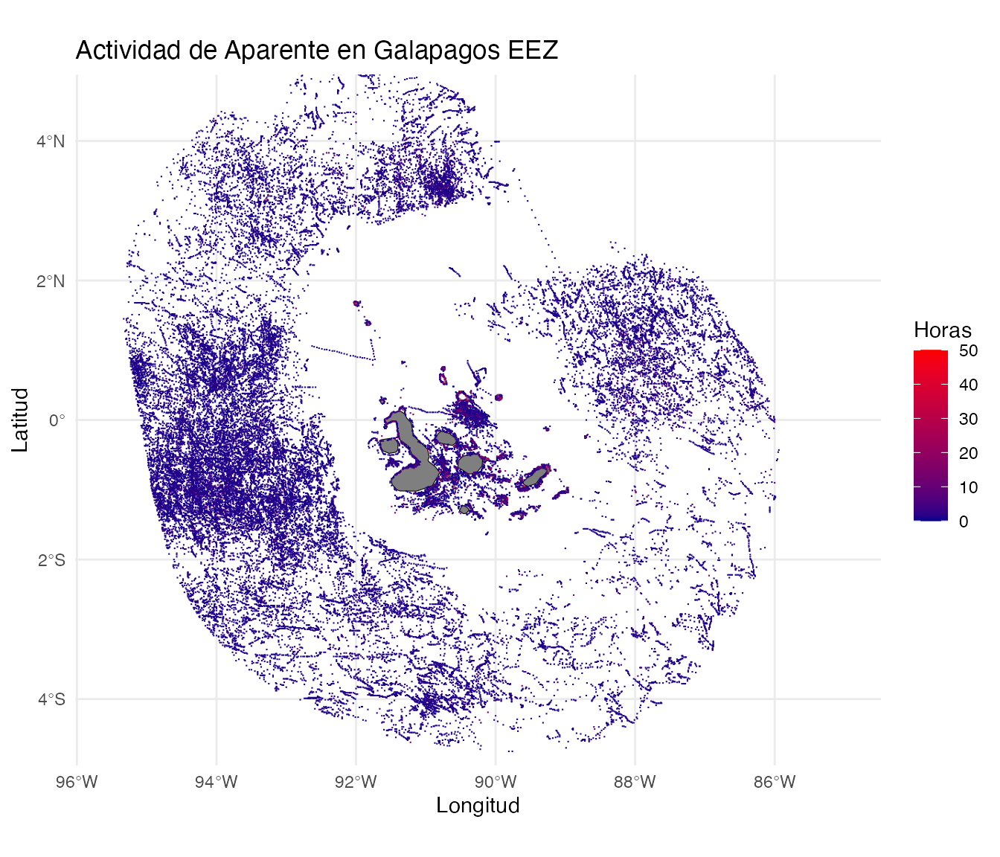
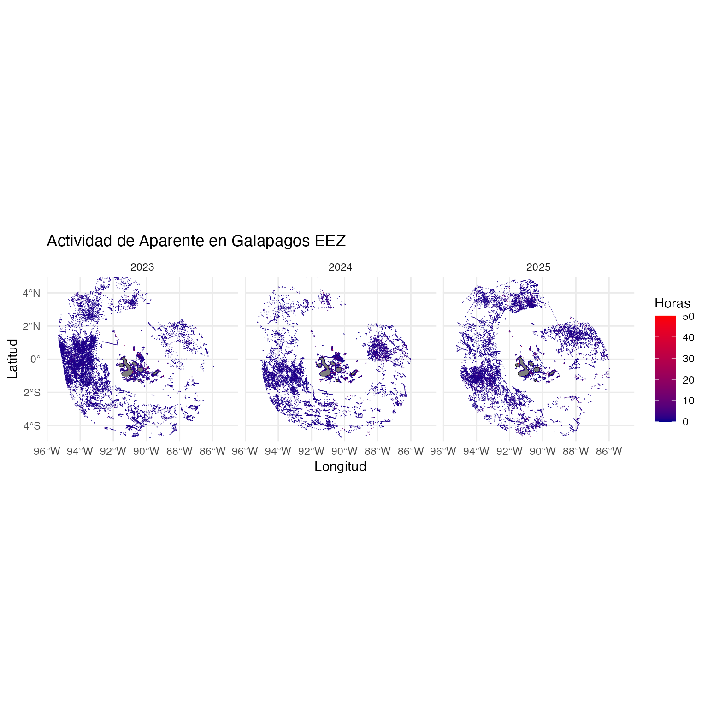

Trabajando con datos de Global Fishing Watch
Global Fishing Watch
Global Fishing Watch (GFW) es una organización no gubernamental (ONG) que busca avanzar en la gobernanza de los océanos a través de una mayor transparencia de la actividad humana en el mar. Al crear y compartir públicamente visualizaciones de mapas, datos y herramientas de análisis, permiten la investigación científica e impulsan una transformación en la forma en que gestiona el océano.
Global Fishing Watch genera nuevo conocimiento utilizando tecnología de punta para convertir big data en información procesable. Comparten esa información públicamente y de forma gratuita para acelerar la ciencia e impulsar políticas y prácticas más justas e inteligentes que recompensen el buen comportamiento y protejan la biodiversidad, la pesca y los medios de subsistencia.
Para más información sobre GFW en http://www.globalfishingwatch.org.
Mapa de visualización y acceso a datos http://www.globalfishingwatch.org/map.
Datos
Global Fishing Watch (GFW) compila una gran cantidad de datos de posicionamiento de embarcaciones (AIS y VMS), registros de embarcaciones y otras infraestructuras marinas, y los pone a disposición de los usuarios a través de sus distintas plataformas. El acceso a estos datos e información es completamente gratuito y se puede realizar directamente a través de su Plataforma WEB, API, paquete de R y de librería de Python.
Si bien la mayoría de los datos de GFW son gratuitos y de libre uso, para acceder a algunos de ellos es necesario crear una cuenta, proceso que también es completamente gratuito. Para ello, se debe ingresar a la página principal de la plataforma de GFW y hacer clic en ícono de registro () ubicado en el extremo inferior izquierdo de la pantalla. Luego, se deben seguir los pasos del proceso de registro para obtener acceso a la descarga de datos.
Para este ejercicio, vamos a usar los datos de actividad de pesca aparente, derivado de los dispositivos AIS, para los años 2023, 2024 y 2025, en la zona economica exclusiva que rodea las islas Galápagos de la república del Ecuador, tanto como una serie de temporal diaria por barco y por unidad espacial (0.01°x0.01°) .
Descripción de los datos
Los datos temporales que vamos a utilizar en este ejercicio son las horas de pesca aparente diaria por embarcación detectada dentro de esta área de interés.
Estos datos además contienen información acerca de las embarcaciones, con nombre, numero IMO, MMSI, bandera, arte de pesca entre otros (Tabla 1).
data <- read.csv(
here::here(
"16-lunes",
"datos",
"Temporal_Ecuadorian Exclusive Economic Zone (Galapagos) - 2023-01-01T00_00_00.000Z,2024-01-01T00_00_00.000Z",
"layer-activity-data-0",
"public-global-fishing-effort-v5.0.csv"
)
)
knitr::kable(head(data))| Time.Range | Vessel.ID | Flag | Vessel.Name | Entry.Timestamp | Exit.Timestamp | Gear.Type | Vessel.Type | MMSI | IMO | CallSign | First.Transmission.Date | Last.Transmission.Date | Apparent.Fishing.Hours |
|---|---|---|---|---|---|---|---|---|---|---|---|---|---|
| 2023-06-18 | f594e04e3-322a-a564-0018-d27b5ef287d5 | ECU | DONA MARUJA | 2023-02-03T20:00:00Z | 2023-11-11T22:00:00Z | TUNA_PURSE_SEINES | FISHING | 735058681 | NA | HC5081 | 2021-01-04T16:46:10Z | 2026-10-10T23:12:53Z | 21.83 |
| 2023-07-05 | c5f9c52d3-33f0-dcb0-9411-1a2fae43db78 | ECU | B/P.ARIETE | 2023-05-31T01:00:00Z | 2023-10-26T23:00:00Z | TUNA_PURSE_SEINES | FISHING | 735057785 | NA | HC-4807 | 2021-12-30T15:27:19Z | 2026-10-14T12:01:35Z | 23.98 |
| 2023-01-12 | 24c31533f-f483-fbe9-7fa0-e62a13f114f7 | ECU | ESPERANZA | 2023-01-12T12:00:00Z | 2023-12-22T15:00:00Z | FISHING | FISHING | 735059569 | NA | HC6016 | 2016-10-13T15:08:42Z | 2026-11-05T21:45:33Z | 1.08 |
| 2023-10-04 | 059bcc57d-dc5c-5caa-1f07-c3e8564c2ac7 | ECU | NINA AKEMY | 2023-01-17T19:00:00Z | 2023-12-06T18:00:00Z | FISHING | FISHING | 735059399 | NA | HC5851 | 2016-11-09T15:05:42Z | 2026-10-20T12:02:21Z | 4.79 |
| 2023-02-04 | f594e04e3-322a-a564-0018-d27b5ef287d5 | ECU | DONA MARUJA | 2023-02-03T20:00:00Z | 2023-11-11T22:00:00Z | TUNA_PURSE_SEINES | FISHING | 735058681 | NA | HC5081 | 2021-01-04T16:46:10Z | 2026-10-10T23:12:53Z | 1.69 |
| 2023-01-17 | 3604f9b1a-a767-6aac-f931-b6ce5fa101ac | ECU | EL DELFIN | 2023-01-05T15:00:00Z | 2023-11-21T17:00:00Z | FISHING | FISHING | 735058694 | NA | HC5991 | 2017-04-28T14:43:42Z | 2026-09-01T12:03:43Z | 9.99 |
En relación a los datos espaciales que se van a utilizar en este ejercicio son las horas de actividad de pesca aparente diaria por unidad espacial de 0.01°x0.01° de latitud y longitud (Tabla 2).
dataSP <- read.csv(
here::here(
"16-lunes",
"datos",
"SP_Temporal_Ecuadorian Exclusive Economic Zone (Galapagos) - 2023-01-01T00_00_00.000Z,2024-01-01T00_00_00.000Z",
"layer-activity-data-0",
"public-global-fishing-effort-v5.0.csv"
)
)
knitr::kable(head(dataSP))| Lat | Lon | Time.Range | Vessel.ID | Flag | Vessel.Name | Entry.Timestamp | Exit.Timestamp | Gear.Type | Vessel.Type | MMSI | IMO | CallSign | First.Transmission.Date | Last.Transmission.Date | Apparent.Fishing.Hours |
|---|---|---|---|---|---|---|---|---|---|---|---|---|---|---|---|
| -0.01 | -90.27 | 2023-01-01T00:00:00.000Z,2024-01-01T00:00:00.000Z | 469e08534-41af-5ce9-5841-d1138375ab0b | ECU | MEGALODON | 2023-01-31T03:00:00Z | 2023-11-23T02:00:00Z | FISHING | FISHING | 735059883 | NA | HC6314 | 2019-02-04T11:31:05Z | 2026-11-07T23:43:07Z | 0.92 |
| 2.73 | -93.65 | 2023-01-01T00:00:00.000Z,2024-01-01T00:00:00.000Z | facd885ef-fe5d-a83a-d760-c68471fbf289 | ECU | SIEMPRE MI ARCA | 2023-01-19T10:00:00Z | 2023-11-08T20:00:00Z | DRIFTING_LONGLINES | FISHING | 735058993 | NA | HC5299 | 2020-03-14T21:31:15Z | 2026-08-22T19:15:03Z | 1.07 |
| -1.40 | -93.60 | 2023-01-01T00:00:00.000Z,2024-01-01T00:00:00.000Z | 72d5106bd-db22-05cc-5349-685056a09182 | ECU | B/P IKER | 2023-03-27T20:00:00Z | 2023-12-15T00:00:00Z | DRIFTING_LONGLINES | FISHING | 735059835 | NA | HC6271 | 2023-03-17T14:32:03Z | 2026-09-22T18:14:05Z | 0.07 |
| -0.39 | -90.41 | 2023-01-01T00:00:00.000Z,2024-01-01T00:00:00.000Z | 7bf04ede4-4830-a8be-f161-33523af8be7b | ECU | SAMURAY | 2023-01-11T17:00:00Z | 2023-12-11T21:00:00Z | FISHING | FISHING | 735059453 | NA | HC5906 | 2017-08-18T15:17:05Z | 2025-08-22T14:57:22Z | 1.40 |
| 1.99 | -88.48 | 2023-01-01T00:00:00.000Z,2024-01-01T00:00:00.000Z | f594e04e3-322a-a564-0018-d27b5ef287d5 | ECU | DONA MARUJA | 2023-02-03T20:00:00Z | 2023-11-11T22:00:00Z | TUNA_PURSE_SEINES | FISHING | 735058681 | NA | HC5081 | 2021-01-04T16:46:10Z | 2026-10-10T23:12:53Z | 1.04 |
| 0.01 | -91.58 | 2023-01-01T00:00:00.000Z,2024-01-01T00:00:00.000Z | 42018ff85-593e-5a7b-1feb-68e3f774d88d | ECU | XAVIER | 2023-01-10T20:00:00Z | 2023-12-25T23:00:00Z | FISHING | FISHING | 735058061 | NA | HC2279 | 2018-04-20T02:35:43Z | 2026-11-03T21:07:59Z | 1.50 |
Propuesta de Análisis
Los objetivos de este análisis serán:
- Identificar los países con mayor actividad de pesca en la ZEE de las islas galápagos.
- Identificar cuales son los artes de pesca que dominan la actividad de pesca aparente dentro de la ZEE de las islas Galápagos.
- Obtener una serie temporal diaria de la actividad de pesca aparente.
- Todos los países combinados.
- Para los países principales.
- Para los artes de pesca.
- Identificar las zonas con mayor actividad de pesca.
- Identificar los periodos (meses) con mayor actividad de pesca.
Configurar paquere gfwR
# Check/install remotes
remotes::install_github("GlobalFishingWatch/gfwr",
dependencies = TRUE)
library(gfwr)
## https://globalfishingwatch.org/our-apis/tokens
## usethis::edit_r_environ()
#GFW_TOKEN="PASTE_YOUR_TOKEN_HERE"
#key <- gfw_auth()
#key <- Sys.getenv("GFW_TOKEN")Análisis Paso a paso
Actividad de pesca aparente por país de registro
Para analizar los datos de pesca aparente por país de registro, tenemos que agrupar los datos por país y sumar las horas de pesca aparente para cada uno de ellos.
Esto lo vamos a hacer en dos pasos:
- Actividad acumulada de pesca aparente para todos los años por país, esto lo presentaremos en un gráfico.
1.1. Para esto primero usaremos lagfw_ais_fishing_hours()del paquetegfwR. El API de GFW permite la descarta de datos de hasta 1 año, por lo que es necesario que dividamos la descarga para obtener los 3 años de interés.
hp <- gfw_ais_fishing_hours(
spatial_resolution = "HIGH",
temporal_resolution = "DAILY",
start_date = "2023-01-01",
end_date = "2024-01-01",
region_source = "EEZ",
region = 8403,
group_by = "FLAG"
#(https://www.marineregions.org/eezdetails.php?mrgid=8403)
)
## Ahora un ejemplo de como hacer esto con un loop
hp2024_2025 <- data.frame()
for (i in 2024:2025)
{
hp_temp <- gfw_ais_fishing_hours(
spatial_resolution = "HIGH",
temporal_resolution = "DAILY",
start_date = (paste(i, "-01-01", sep="")),
end_date = (paste(i+1, "-01-01", sep="")),
region_source = "EEZ",
region = 8403,
group_by = "FLAG") #(https://www.marineregions.org/eezdetails.php?mrgid=8403)
hp2024_2025 <- rbind(hp2024_2025, hp_temp)
}
data <- rbind(hp, hp2024_2025)1.2. Con los datos ya descargados, agrupamos todas las embarcaciones que
pertenecen al mismo país (`Flag`),
para luego sumar las horas de pesca aparente (`Apparent Fishing Hours`).hpAnual <- data %>%
group_by(flag) %>%
summarise(hp = sum(`Apparent Fishing Hours`, na.rm=T))Ahora que tenemos el número acumulado de horas podemos crear un gráfico usando ggplot.
ggplot(hpAnual) +
geom_col(aes(x=flag, y=hp)) +
xlab("País") +
ylab("Horas de pesca aparente (Hrs)") +
scale_fill_discrete(name = "Tipo") +
scale_colour_discrete(name = "Tipo") +
ggthemes::theme_few() +
theme(axis.text.x = element_text(angle = 45, hjust = 1)) 
Actividad mensual de pesca aparente por de pesca por país y lo presentaremos en un gráfico.
El proceso en este caso es similar, pero ahora se debe agrupar también por el
mes. Para esto es necesario crear la columna mes y year (que usaremos más tarde), esto lo hacemos usando la funciondplr::mutateylubridate::month.
hpplot <- data %>%
mutate(mes = month(`Time Range`),
year = year(`Time Range`)) %>% ## <- Obtenemos el mes desde la columna de la fecha
group_by(mes, flag) %>% ## Incluimos el mes en el grouping
summarise(hp = sum(`Apparent Fishing Hours`, na.rm=T))
ggplot(hpplot) +
geom_col(aes(x=flag, y=hp)) +
xlab("País") +
ylab("Horas de pesca aparente (Hrs)") +
scale_fill_discrete(name = "Tipo") +
scale_colour_discrete(name = "Tipo") +
ggthemes::theme_few() +
theme(axis.text.x = element_text(angle = 45, hjust = 1)) +
facet_wrap(~mes) ## <- Esto permite crear el grafico separando los meses
Serie temporal de actividad diaria de pesca aparente
Para todos los países
Ahora vamos a analizar cómo varía la actividad de pesca aparente a nivel diario. Para esto, compararemos primero la actividad total y luego la actividad por país.
En este caso, debemos agrupar la actividad de pesca aparente por día, sumando las horas individuales de cada embarcación. Posteriormente, podemos realizar este mismo análisis separando los datos por país y/o arte de pesca.
En los gráficos anteriores vimos que Ecuador es el país que presenta la mayor actividad de pesca aparente en esta área. Por esta razón, utilizaremos únicamente las embarcaciones ecuatorianas para este ejemplo. Para ello, filtraremos los datos utilizando la función dplyr::filter.
hpDiaEcu <- data %>%
filter(flag == "ECU") %>% ## Aqui es donde filtramos para barcos de ecuador
group_by(`Time Range`) %>% ## Incluimos el mes en el grouping
summarise(hp = sum(`Apparent Fishing Hours`, na.rm=T))Y como serie temporal.
ggplot(hpDiaEcu) +
geom_line(aes(x=as.Date(`Time Range`), y=hp), col="darkorange") +
xlab("Fecha") +
ylab("Horas de pesca aparente (Hrs)") +
ggthemes::theme_few() +
theme(axis.text.x = element_text(angle = 45, hjust = 1))
Para los países principales
Ahora elaboraremos este gráfico temporal para los países (excluido Ecuador) que presentan la mayor actividad de pesca aparente en la ZEE de las islas Galápagos.
Para ello, necesitamos excluir las embarcaciones con bandera de Ecuador (filter(Flag != "ECU")) y aquellas sin bandera conocida (!is.na(Flag)).
Con estos datos, calculamos el total de horas de actividad de pesca aparente por país.
porPais <- data %>%
filter(flag != "ECU", flag != "",
!is.na(flag)) %>% ## Eliminamos embarcaciones de Ecuador y aquellas sin bandera
group_by(flag) %>% ## Incluimos el mes en el grouping
summarise(hp = sum(`Apparent Fishing Hours`, na.rm=T)) %>%
arrange(desc(hp))
knitr::kable(porPais)| flag | hp |
|---|---|
| PAN | 1595.01 |
| NIC | 655.34 |
| CRI | 407.74 |
| VEN | 284.22 |
| PER | 33.27 |
| USA | 3.56 |
| GBR | 2.99 |
| ESP | 1.67 |
| TUV | 1.26 |
En la Tabla 3 vemos que la actividad de pesca aparente de Estados Unidos (USA), Reino Unido (GBR), España (ESP) y Tuvalu (TUV) son muy bajar y pueden corresponder a falsos positivos, es por esto que los eliminaremos del análisis.
diaNoEcu <- data %>%
filter(flag == c("PAN", "NIC" ,"CRI", "VEN", "PER")) %>%
group_by(flag, `Time Range`) %>%
summarise(hp = sum(`Apparent Fishing Hours`, na.rm=T))ggplot(diaNoEcu) +
geom_point(aes(x=as.Date(`Time Range`), y=hp, col = flag)) +
geom_line(aes(x=as.Date(`Time Range`), y=hp, col = flag)) +
xlab("Fecha") +
ylab("Horas de actividad aparente (Hrs)") +
ggthemes::theme_few() +
theme(axis.text.x = element_text(angle = 45, hjust = 1)) +
facet_wrap(~flag)
Análisis espacial de la actividad de pesca aparente
Zonas con mayor actividad de pesca aparente total anual
Aqui agrupamos los datos espaciales, sumando las horas de pesca aparente para los 3 años, en cada una de las celdas y luego lo presentamos.
spAnual <- data %>%
group_by(Lat, Lon) %>%
summarise(hp = sum(`Apparent Fishing Hours`, na.rm=T))Y presentamos el mapa.
ggplot(spAnual) +
geom_tile(aes(x=Lon, y=Lat, z=hp))
Esta imágen se ve bastante mal, es necestio agregar las islas y, en términos generales, mejorar la presentación.
# Get Galapagos land data
spAnual_sf <- st_as_sf(spAnual, coords = c("Lon", "Lat"), crs = 4326) # Lo transforma a un objeto geográfico
galapagos_land <- ne_countries(scale = "medium", returnclass = "sf") %>%
filter(name == "Ecuador") # Filter for Ecuador, as Galapagos belongs to Ecuador
ggplot() +
# Add base map
geom_sf(data = galapagos_land, fill = "grey50", color = "black") +
# Add fishing data
geom_tile(data = spAnual, aes(x = Lon, y = Lat, fill = hp, col=hp)) +
# Define color gradient
scale_color_gradient(low = "darkblue", high = "red", name = "Horas", limits = c(0, 50)) +
scale_fill_gradient(low = "darkblue", high = "red", name = "Horas", limits = c(0, 50)) +
scale_size_continuous(name = "Horas de Actividad Aparente") +
labs(
title = "Actividad de Aparente en Galapagos EEZ",
x = "Longitud",
y = "Latitud"
) +
theme_minimal() +
coord_sf(xlim = c(-95.5, -85), ylim = c(-4.5, 4.5)) # Adjust limits to Galapagos region
Zonas con mayor actividad de pesca aparente acumulada por año
El mismo gráfico, pero separado por años.
spMensual <- data %>%
mutate(year = year(`Time Range`)) %>%
group_by(year, Lat, Lon) %>%
summarise(hp = sum(`Apparent Fishing Hours`, na.rm=T))
ggplot() +
geom_sf(data = galapagos_land, fill = "grey50", color = "black") +
geom_tile(data = spMensual, aes(x = Lon, y = Lat, fill = hp, col=hp)) +
scale_color_gradient(low = "darkblue", high = "red", name = "Horas", limits = c(0, 50)) +
scale_fill_gradient(low = "darkblue", high = "red", name = "Horas", limits = c(0, 50)) +
scale_size_continuous(name = "Horas de Actividad Aparente") +
labs(
title = "Actividad de Aparente en Galapagos EEZ",
x = "Longitud", y = "Latitud" ) +
theme_minimal() +
coord_sf(xlim = c(-95.5, -85), ylim = c(-4.5, 4.5)) +# Adjust limits to Galapagos region
facet_wrap(~year)
Otras funciones de interés
Presencia
Si quisieramos conocer los potenciales riesgos de colición con mamíferos marinos podriamos hacer algo como esto.
aFiltrar <- c("speed = '10-15'", "speed = '15-25'",
"speed = '>25'")
presSpeed <- data.frame()
for (i in aFiltrar)
{
temp <- gfw_ais_presence(spatial_resolution = "HIGH",
temporal_resolution = "DAILY",
start_date = "2026-01-01",
end_date = "2026-07-01",
region_source = "EEZ",
group_by = "FLAG",
region = 8403,
key = gfw_auth(),
filter_by = i)
presSpeed <- rbind(presSpeed, temp)
}Información de embarcaciones
gfwr::gfw_vessel_info(query = 735060382,
search_type = "search") $selfReportedInfo |>
kableExtra::kable()| index | vesselId | ssvid | shipname | nShipname | flag | callsign | imo | messagesCounter | positionsCounter | sourceCode | matchFields | transmissionDateFrom | transmissionDateTo |
|---|---|---|---|---|---|---|---|---|---|---|---|---|---|
| 1 | 1fe5f27d2-26b1-8781-75f5-24ac8162b0fc | 735060382 | DAYANARA | DAYANARA | ECU | HC6683 | NA | 695645 | 121510 | AIS | NO_MATCH | 2023-06-09T22:16:28Z | 2026-11-07T09:50:46Z |
#gfwr::gfw_vessel_info(ids = as.vector(presSpeed$`Vessel ID`[3]),
# search_type = "id")$combinedSourcesInfo |>
# kableExtra::kable()Conocer los Regiones disponibles
gfw_regions(region_source = "EEZ", key = gfw_auth()) |>
filter(iso == "CHL")# A tibble: 3 × 5
iso label id GEONAME POL_TYPE
<chr> <chr> <dbl> <chr> <chr>
1 CHL Chile 8465 Chilean Exclusive Econo… 200NM
2 CHL Islas San Félix and San Ambrosio 22756 Chilean Exclusive Econo… 200NM
3 CHL Easter Island 21787 Chilean Exclusive Econo… 200NM gfw_regions(region_source = "MPA", key = gfw_auth()) |>
filter(str_detect(label, "Juan Fernández")) |>
kableExtra::kable()| label | id |
|---|---|
| Archipiélago Juan Fernández (RB) - Reserva Biósfera | 121 |
| Mar de Juan Fernández - Área de Conservación de Múltiples Usos | 555786067 |
| Mar de Juan Fernández (PN) - Parque Nacional | 555786068 |
Eventos
gfw_event(
event_type = "FISHING", #"ENCOUNTER", "GAP", "LOITERING", "PORT_VISIT",
start_date = "2026-01-01",
end_date = "2026-02-01",
sort = "+start",
#flags = "ECU",
region_source = "EEZ",
region = 8403
)[1:10,] |> kableExtra::kable()[1] "Downloading 186 events from GFW"| start | end | eventId | eventType | lat | lon | regions | boundingBox | distances | vesselId | vessel_name | vessel_ssvid | vessel_flag | vessel_type | vessel_publicAuthorizations | vessel_nextPort | event_info |
|---|---|---|---|---|---|---|---|---|---|---|---|---|---|---|---|---|
| 2026-01-01 14:18:49 | 2026-01-01 22:10:02 | 2a66784c8ec33b772dd92435772340b3 | fishing | 0.2761 | -91.6170 | 11753 , 191 , 10708 , 8403 , IWC , ACAP , CPPS , IATTC , 87.1 , 87 , 87.1.3 , 87 , ETTP_10 , ETTP_8 , 14SETTPO222222IMMA, AIECU1 , AIHSTREATY36 , AIECU2 , AIHSTREATY2 , AIECU192 , AIHSEBSA151 , AIHSEBSA152 , AIHSTREATY28 | -91.625253, 0.270360, -91.614725, 0.282635 | 24.000000, 25.000000, 1.111936, 1.111949 | ce65a92fa-ae1f-d30e-852f-2b467d6b676d | KATTY TATIANA | 735059649 | ECU | fishing | false, IATTC | NA | 6.15730504298335 , 1.72978723404255 , FALSE , not_matching_relevant_public_authorization |
| 2026-01-03 13:25:18 | 2026-01-03 14:04:23 | 69f00f856a909868a6bf5a61b6e6f44a | fishing | -1.1511 | -89.9290 | 10708 , 11753 , 191 , 8403 , IWC , ACAP , CPPS , IATTC , 87.1 , 87 , 87.1.3 , 87 , ETTP_10 , ETTP_8 , 14SETTPO222222IMMA, AIECU1 , AIHSTREATY36 , AIHSTREATY28 , AIHSTREATY2 , AIHSEBSA152 , AIHSEBSA151 , AIECU192 , AIECU2 | -89.931175, -1.151833, -89.927463, -1.150030 | 31.00000, 31.00000, 37.61983, 36.70532 | 06d07de38-85b3-bf93-a201-4684c3e95276 | SAN JOSE | 735060175 | ECU | fishing | false, IATTC | NA | 0.878012575028948 , 1.83636363636364 , FALSE , not_matching_relevant_public_authorization |
| 2026-01-03 14:34:17 | 2026-01-03 22:34:22 | e998bfe9ee1cf2358d3d6f25bd6b6f80 | fishing | -1.2079 | -89.9887 | 10708 , 11753 , 191 , 8403 , CPPS , IWC , IATTC , ACAP , 87 , 87.1.3 , 87.1 , 87 , ETTP_8 , ETTP_10 , 14SETTPO222222IMMA, AIECU2 , AIHSTREATY36 , AIHSTREATY2 , AIECU192 , AIHSTREATY28 , AIHSEBSA151 , AIHSEBSA152 , AIECU1 | -90.013932, -1.212042, -89.980582, -1.197198 | 32.00000, 32.00000, 33.44389, 37.37101 | 06d07de38-85b3-bf93-a201-4684c3e95276 | SAN JOSE | 735060175 | ECU | fishing | false, IATTC | NA | 10.0773859686119 , 1.33669724770642 , FALSE , not_matching_relevant_public_authorization |
| 2026-01-04 12:07:38 | 2026-01-04 20:55:46 | 9b837daf96b870bdfa3b61f951550f03 | fishing | -1.1441 | -89.9083 | 191 , 10708 , 11753 , 8403 , IATTC , CPPS , IWC , ACAP , 87.1 , 87 , 87.1.3 , 87 , ETTP_10 , ETTP_8 , 14SETTPO222222IMMA, AIECU192 , AIHSEBSA151 , AIHSTREATY28 , AIHSEBSA152 , AIHSTREATY2 , AIHSTREATY36 , AIECU1 , AIECU2 | -89.931683, -1.163103, -89.882358, -1.128487 | 31.00000, 31.00000, 37.00675, 35.38644 | 06d07de38-85b3-bf93-a201-4684c3e95276 | SAN JOSE | 735060175 | ECU | fishing | false, IATTC | NA | 26.1925994557017 , 2.30807453416149 , FALSE , not_matching_relevant_public_authorization |
| 2026-01-04 14:19:42 | 2026-01-04 15:04:46 | 5755d93d80bc20ce6121acfec65ed571 | fishing | -0.8377 | -90.8240 | 10708 , 191 , 11753 , 8403 , IWC , IATTC , CPPS , ACAP , 87.1.3 , 87.1 , 87 , 87 , ETTP_8 , ETTP_10 , 14SETTPO222222IMMA, AIECU192 , AIECU1 , AIHSEBSA151 , AIHSTREATY2 , AIECU2 , AIHSTREATY36 , AIHSTREATY28 , AIHSEBSA152 | -90.830448, -0.851612, -90.816620, -0.823882 | 0.00000, 2.00000, 18.09998, 22.01412 | b0b40ba5a-a4eb-127b-471f-8dc5aaafc03e | SANDRA | 735059469 | ECU | fishing | false, IATTC | NA | 3.55912198282467 , 5.02857142857143 , FALSE , not_matching_relevant_public_authorization |
| 2026-01-05 14:25:26 | 2026-01-05 17:15:08 | 218803369d4594c5ccc3347562387fb8 | fishing | -0.8574 | -90.6487 | 191 , 10708 , 11753 , 8403 , IWC , CPPS , IATTC , ACAP , 87 , 87.1 , 87.1.3 , 87 , ETTP_10 , ETTP_8 , 14SETTPO222222IMMA, AIHSEBSA151 , AIHSEBSA152 , AIHSTREATY2 , AIECU2 , AIHSTREATY36 , AIECU192 , AIHSTREATY28 , AIECU1 | -90.652780, -0.861983, -90.643303, -0.852815 | 13.00000, 14.00000, 35.15888, 36.57210 | 5f46ecfd0-050a-9d9c-8c05-917c2c47a022 | ASI ES LA VIDA II | 735059497 | ECU | fishing | false, IATTC | NA | 3.85370480414967 , 1.13695652173913 , FALSE , not_matching_relevant_public_authorization |
| 2026-01-05 14:44:59 | 2026-01-06 00:06:08 | a17c8bb8580bd15de369a1d8f096fb88 | fishing | 0.2749 | -91.6184 | 191 , 10708 , 11753 , 8403 , IWC , CPPS , IATTC , ACAP , 87.1 , 87.1.3 , 87 , 87 , ETTP_8 , ETTP_10 , 14SETTPO222222IMMA, AIECU1 , AIHSTREATY28 , AIECU192 , AIHSTREATY2 , AIHSTREATY36 , AIHSEBSA152 , AIHSEBSA151 , AIECU2 | -91.626547, 0.258303, -91.613542, 0.281323 | 23.000000, 25.000000, 2.486389, 1.111949 | 59d0ac704-44ce-4293-9b51-d53177ba30e5 | OCEAN LIFE | 735059677 | ECU | fishing | false, IATTC | NA | 18.4139277557877 , 1.41777777777778 , FALSE , not_matching_relevant_public_authorization |
| 2026-01-05 17:27:02 | 2026-01-05 18:37:05 | b078cd04b81ead719d60fa3edecfad47 | fishing | -1.3526 | -89.6188 | 191 , 10708 , 11753 , 8403 , ACAP , IWC , IATTC , CPPS , 87.1.3 , 87.1 , 87 , 87 , ETTP_10 , ETTP_8 , 14SETTPO222222IMMA, AIHSEBSA152 , AIHSTREATY2 , AIHSTREATY28 , AIECU192 , AIECU2 , AIHSTREATY36 , AIECU1 , AIHSEBSA151 | -89.623247, -1.360912, -89.614525, -1.344772 | 1.000000, 2.000000, 4.008414, 4.446572 | 24c31533f-f483-fbe9-7fa0-e62a13f114f7 | ESPERANZA | 735059569 | ECU | fishing | false, IATTC | NA | 2.0446293983504 , 0.8 , FALSE , not_matching_relevant_public_authorization |
| 2026-01-05 18:15:08 | 2026-01-06 00:52:45 | 3f4cf2def3a0c68e88c8588ca8322a59 | fishing | -0.7962 | -90.6720 | 10708 , 11753 , 191 , 8403 , IATTC , ACAP , CPPS , IWC , 87.1 , 87 , 87.1.3 , 87 , ETTP_8 , ETTP_10 , 14SETTPO222222IMMA, AIHSTREATY28 , AIECU192 , AIHSEBSA151 , AIHSTREATY36 , AIHSEBSA152 , AIECU2 , AIHSTREATY2 , AIECU1 | -90.676843, -0.802952, -90.658878, -0.791298 | 12.00000, 14.00000, 35.85605, 38.20952 | 5f46ecfd0-050a-9d9c-8c05-917c2c47a022 | ASI ES LA VIDA II | 735059497 | ECU | fishing | false, IATTC | NA | 3.9157279475296 , 0.817045454545455 , FALSE , not_matching_relevant_public_authorization |
| 2026-01-06 00:05:35 | 2026-01-07 14:25:09 | c7aad910b53b31682c6e3e6dc8c73cb9 | fishing | 0.3096 | -90.4031 | 10708 , 191 , 11753 , 8403 , IWC , ACAP , CPPS , IATTC , 87.1.3 , 87.1 , 87 , 87 , ETTP_10 , ETTP_8 , 14SETTPO222222IMMA, AIHSTREATY28 , AIECU2 , AIECU192 , AIHSEBSA152 , AIHSTREATY2 , AIHSTREATY36 , AIHSEBSA151 , AIECU1 | -90.406492, 0.301565, -90.394458, 0.322148 | 1.00000, 2.00000, 51.16100, 50.04929 | e6326c1bc-ca2a-7de7-b2a3-baf6bfef6b55 | CRISTOFHER | 735059488 | ECU | fishing | false, IATTC | NA | 30.8406221975094 , 1.16624775583483 , FALSE , not_matching_relevant_public_authorization |